I installed and ran n8n locally, imported and configured all four lab workflows (A–D) with my own Telegram bot and Gemini key,
and ran the guide's test cases. Every checkpoint on the lab's evidence sheet is met, and every execution is logged in execution_logs/.
I then built a customised V4 accounts-payable triage service: five workflows that fix the limitations the lab guide itself lists (Appendix D and section 7.4):
a hard-coded PO list, a duplicate check that never learns, and AI text that is never stored. V4 also adds new fraud controls,
priority-based alerting, a batch API, a guardrail on the AI output, and a daily manager digest.
http://localhost:5678, telemetry off, timezone Asia/Singapore.getUpdates after sending /start), not the bot's id,
which avoids the guide's "bot can't send messages to the bot" 403 error.{{ $env.TELEGRAM_CHAT_ID }}, so it isn't in any workflow JSON. Chat id, name and username are masked in screenshots and logs.tools/n8n_setup.py rebuilds everything on a fresh n8n: Data Tables, seeded PO master, credentials (from environment variables),
workflow import with id wiring, and publishing.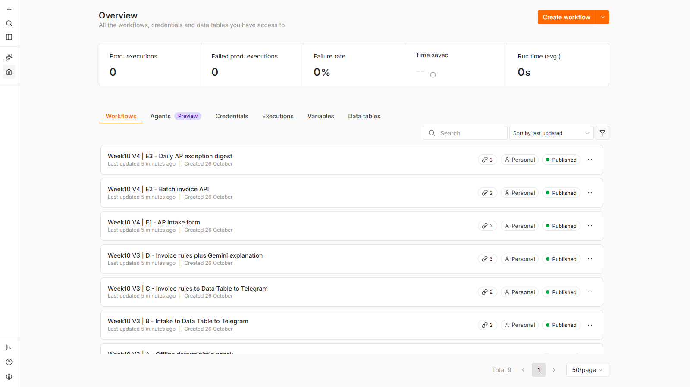
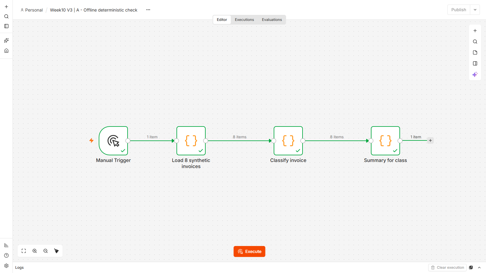
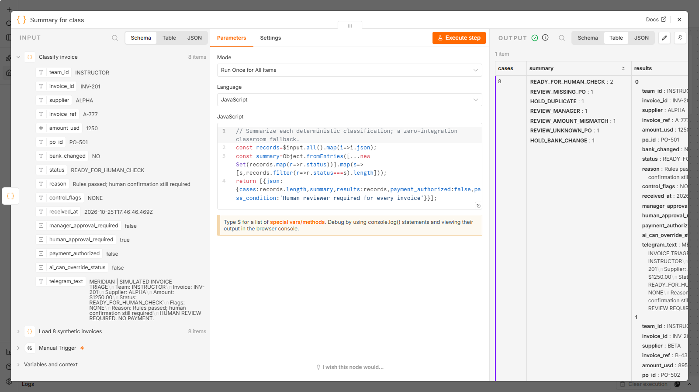
| Flow | Case | Execution | Result | What happened | Telegram |
|---|---|---|---|---|---|
| B | INV request T01 / Alex | #2 | success | row saved to Week10_Intake | ok=true, message_id 35 |
| C | INV-201 | #3 | success | READY_FOR_HUMAN_CHECK (NONE); manager=false, paid=false | ok=true, message_id 36 |
| C | INV-203 | #4 | success | REVIEW_MISSING_PO (MISSING_PO|HIGH_VALUE); manager=true, paid=false | ok=true, message_id 37 |
| C | INV-204 | #5 | success | HOLD_DUPLICATE (HISTORIC_DUPLICATE); manager=false, paid=false | ok=true, message_id 38 |
| C | INV-205 | #6 | success | REVIEW_MANAGER (HIGH_VALUE); manager=true, paid=false | ok=true, message_id 39 |
| D | INV-203 (team T02) | #7 | error | Gemini 3.8 Flash: 503 Service unavailable (see 6.1) | not sent |
| D | INV-203 (team T02) | #8 | success | REVIEW_MISSING_PO + AI note | ok=true, message_id 40 |
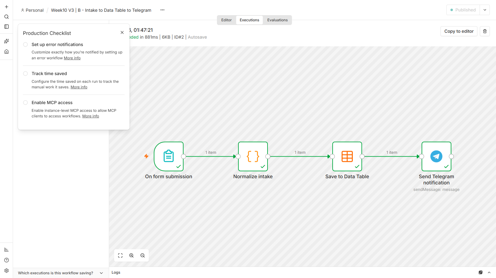
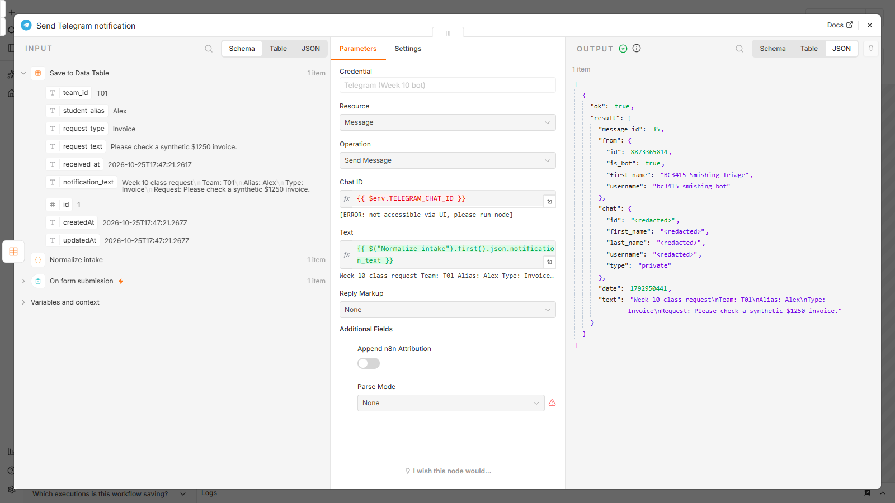
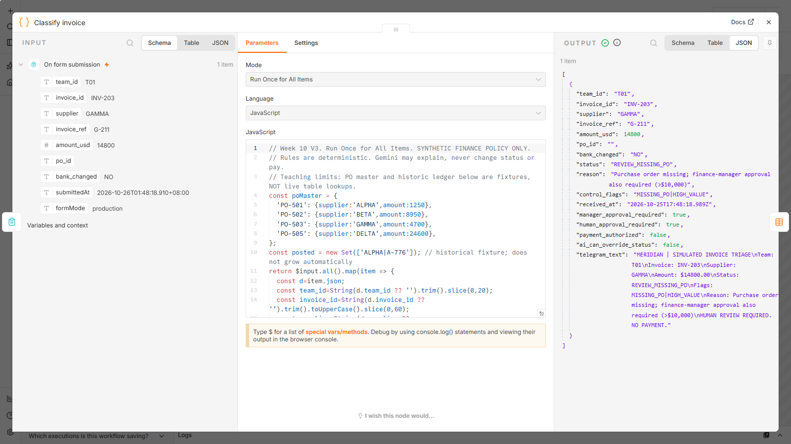
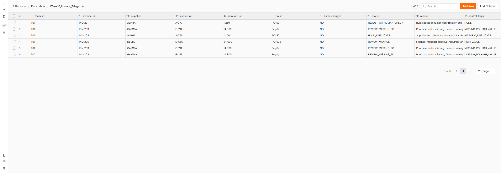
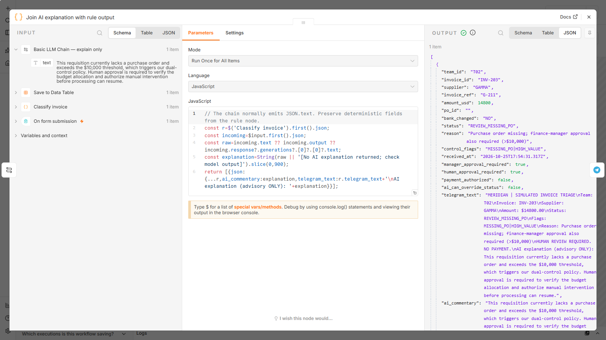
Evidence sheet (guide section 9.1): A, B1 (T1_datatable_Week10_Intake.png), B2, C1, C2, C3 (INV-204 HOLD_DUPLICATE and INV-205 REVIEW_MANAGER in the table above),
and D are all met, with execution logs for each.
Workflow C is a good teaching template, but the guide lists why it can't be used for real: the PO list is fixed in JavaScript, so finance can't update it; the duplicate check only knows one historic invoice, so the same invoice submitted twice is not caught ("Duplicate not detected on second submission"); it treats each invoice alone, so it misses patterns across invoices; every outcome sends the same Telegram message; and the Gemini note in D is never saved. These are exactly the gaps that let duplicate payments and approval-limit splitting through in real accounts-payable teams.
| Workflow | Role |
|---|---|
| sub | Core rules + AP ledger | Loads the PO master and the whole ledger from Data Tables, runs the V4 rules, writes each case to Week10_AP_Ledger_V4. Deterministic; no AI. |
| sub | Alerts + Gemini explanation | Switch by priority. P1 HOLD: instant Telegram, facts only. P2 REVIEW: Gemini explains, a guardrail checks it, the note is written back to the ledger row, then Telegram. P3 READY: no message (avoids alert fatigue). |
| E1 AP intake form | Form for AP clerks; dropdown for the bank-change question; shows the triage result and case id when submitted. |
| E2 Batch invoice API | POST /webhook/meridian-ap-v4/batch takes 1–200 invoices (e.g. from an OCR or email-capture system) and returns a JSON summary. |
| E3 Daily AP exception digest | Every weekday at 08:30 SGT: counts and amounts from the ledger; Gemini writes a 3-bullet briefing; a guardrail checks that every number in it exists in the data. |
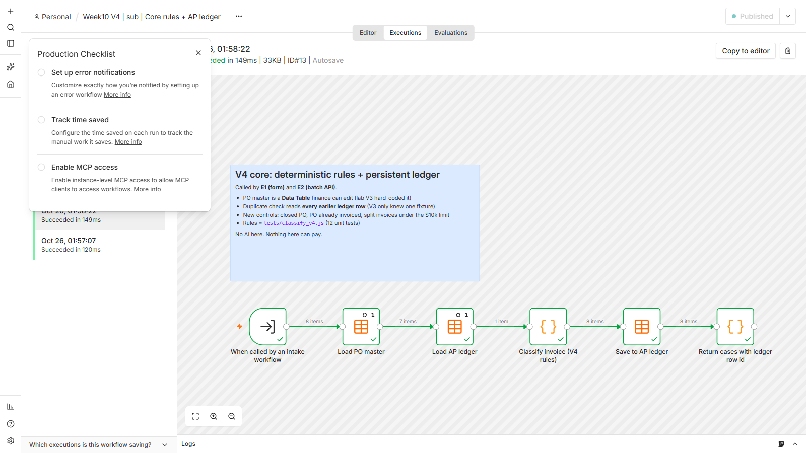
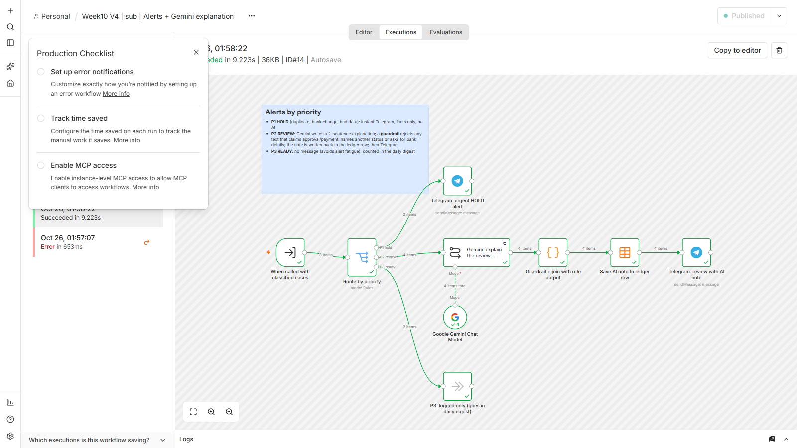
| # | Status | Condition | New in V4? |
|---|---|---|---|
| 1 | HOLD_INVALID_DATA | missing field or invalid amount | |
| 2 | HOLD_DUPLICATE | same supplier + reference anywhere in the ledger, earlier in the batch, or in the lab fixture (case and spaces ignored) | persistent |
| 3 | HOLD_BANK_CHANGE | supplier says bank details changed | |
| 4 | REVIEW_MISSING_PO | no PO | |
| 5 | REVIEW_UNKNOWN_PO | PO not in the PO master Data Table | table, not code |
| 6 | REVIEW_PO_CLOSED | PO status is not OPEN | new |
| 7 | REVIEW_PO_SUPPLIER | PO belongs to another supplier | |
| 8 | REVIEW_PO_ALREADY_INVOICED | the PO was already used by an earlier invoice with a different reference (re-billing) | new |
| 9 | REVIEW_AMOUNT_MISMATCH | amount differs from the PO | |
| 10 | REVIEW_SPLIT_SUSPECTED | same supplier, last 7 days, each ≤ $10k but together > $10k (approval-limit splitting); also sets manager approval | new |
| 11 | REVIEW_MANAGER | amount > $10,000 | |
| 12 | READY_FOR_HUMAN_CHECK | all controls pass |
Each case also gets a case_id and a priority (P1/P2/P3). human_approval_required=true, payment_authorized=false and
ai_can_override_status=false on every row, as in the lab. The rules are a plain function (tests/classify_v4.js) that the build script copies into the Code node,
with 12 unit tests, including the guide's Appendix A answers for all 8 lab invoices.
| Invoice | Priority | Status | Flags | Route | AI guardrail |
|---|---|---|---|---|---|
| INV-201 | P3 | READY_FOR_HUMAN_CHECK | NONE | logged, digest only | - |
| INV-202 | P3 | READY_FOR_HUMAN_CHECK | NONE | logged, digest only | - |
| INV-203 | P2 | REVIEW_MISSING_PO | MISSING_PO|HIGH_VALUE | Gemini note + alert | PASSED |
| INV-204 | P1 | HOLD_DUPLICATE | DUPLICATE | instant HOLD alert | - |
| INV-205 | P2 | REVIEW_MANAGER | HIGH_VALUE | Gemini note + alert | PASSED |
| INV-206 | P2 | REVIEW_PO_ALREADY_INVOICED | PO_ALREADY_INVOICED|SPLIT_SUSPECTED | Gemini note + alert | PASSED |
| INV-207 | P2 | REVIEW_UNKNOWN_PO | UNKNOWN_PO | Gemini note + alert | PASSED |
| INV-208 | P1 | HOLD_BANK_CHANGE | BANK_CHANGE | instant HOLD alert | - |
Same answers as the lab for 7 of 8. The difference is INV-206: V3 only saw an amount mismatch, while V4 sees that INV-202 already used PO-502 in the same batch (possible re-billing) and that the two BETA invoices ($8,950 + $9,150) look like a split.
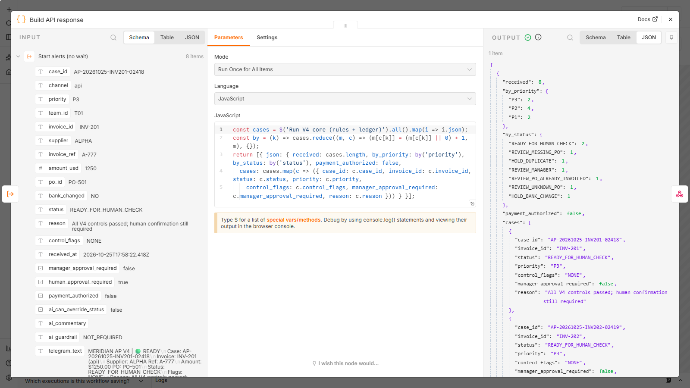
| Submitted | Executions (core / alerts) | Status | Reason | Telegram | AI |
|---|---|---|---|---|---|
| INV-301 EPSILON $6,000 PO-506 (form) | #16 / #17 | READY_FOR_HUMAN_CHECK | All V4 controls passed; human confirmation still required | none (P3) | - |
| INV-302 EPSILON $5,500 PO-507 (form) | #19 / #20 | REVIEW_SPLIT_SUSPECTED | 3 invoices from EPSILON in 7 days, each <= $10,000 but $12000.00 together (approval-limit splitting?) | ok=true, message_id 47 | PASSED |
| INV-201B 'alpha' ' a-777 ' $1,250 (form, re-keyed) | #22 / #23 | HOLD_DUPLICATE | Supplier and reference already submitted (found in AP ledger table or earlier in this batch) | ok=true, message_id 48 | - |
| INV-303 ZETA $3,200 PO-508 (API) | #25 / #26 | REVIEW_PO_CLOSED | PO-508 is CLOSED, not OPEN | ok=true, message_id 49 | PASSED |
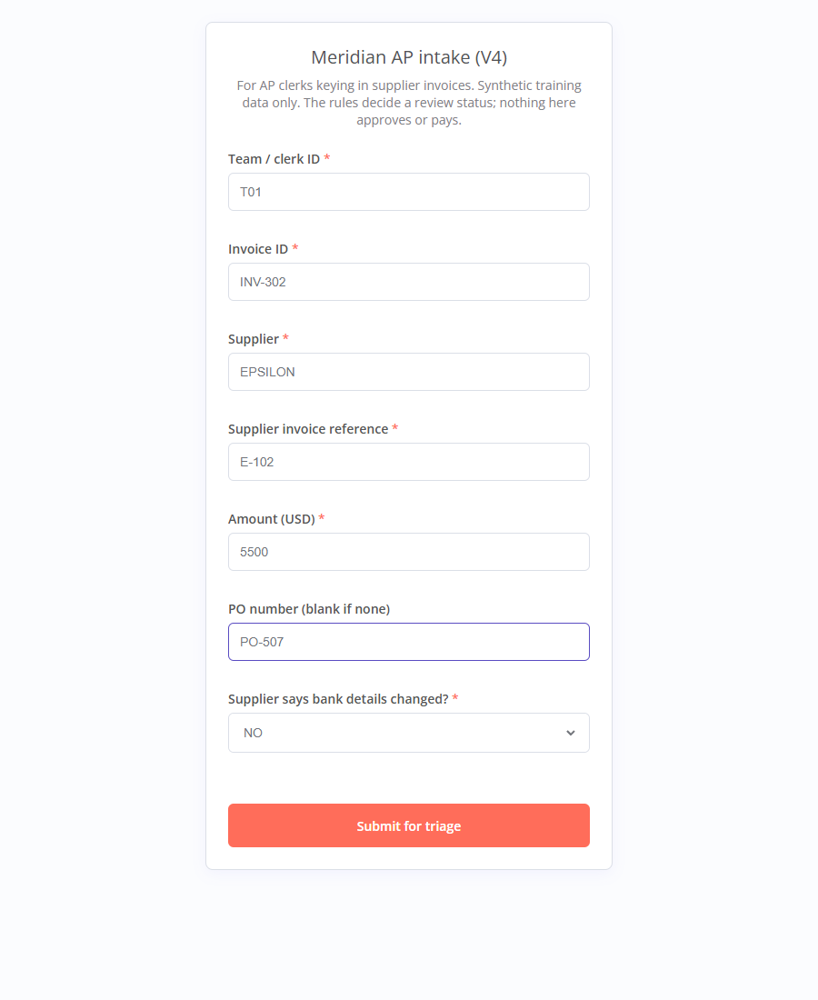
Gemini's note for INV-302 (guardrail PASSED):
This invoice presents a risk of invoice splitting to bypass standard approval thresholds, as multiple submissions from EPSILON totaling $12,000.00 were received within a 7-day window. Please verify the business justification for these separate purchases and confirm whether they should have been consolidated under a single authorization.
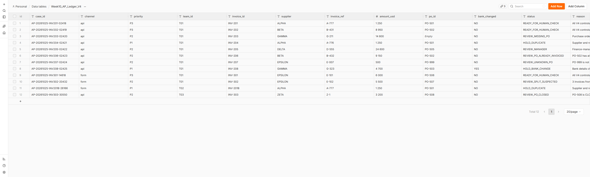
MERIDIAN AP V4 | DAILY DIGEST Cases: 12 | P1 3 / P2 6 / P3 3 On hold: $7200.00 | Needs manager: $54050.00 By status: READY_FOR_HUMAN_CHECK 3, REVIEW_MISSING_PO 1, HOLD_DUPLICATE 2, REVIEW_MANAGER 1, REVIEW_PO_ALREADY_INVOICED 1, REVIEW_UNKNOWN_PO 1, HOLD_BANK_CHANGE 1, REVIEW_SPLIT_SUSPECTED 1, REVIEW_PO_CLOSED 1 * **Action First:** Review the 1 manager review case worth $54,050. * **Total Value on Hold:** $7,200. * **Unusual:** There are 2 duplicate holds for the exact same amount ($1,250 for INV-204 ALPHA and INV-201B ALPHA). (Advisory summary. Statuses come from the rules; nothing is approved or paid.)
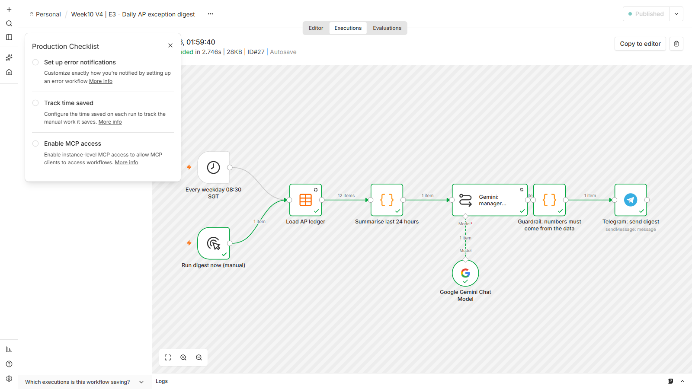
The template's models/gemini-3.8-flash answered "Service unavailable". A direct API check showed 3.8-flash and flash-latest overloaded, while
gemini-flash-lite-latest answered normally. Following the guide's troubleshooting advice ("choose another currently accessible model"), workflow D now uses
flash-lite with n8n's Retry on fail (3 tries, 5 s apart). Re-run #8: success.
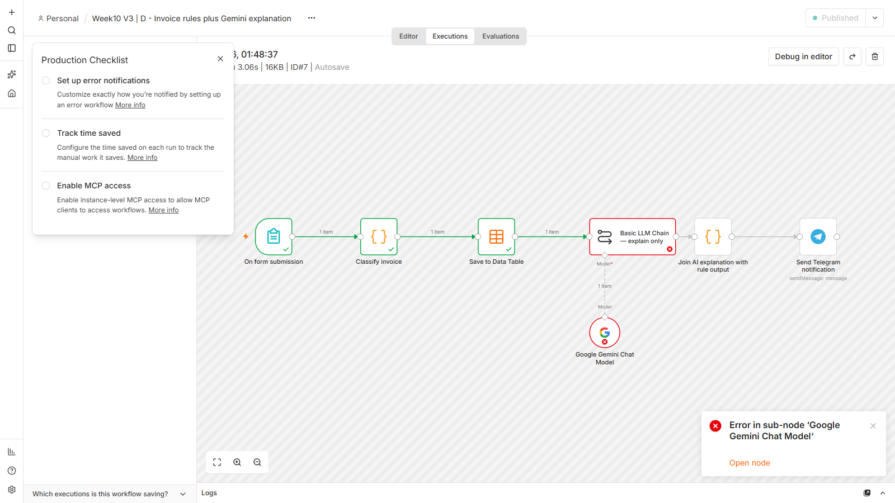
The V4 alert text has status codes like HOLD_DUPLICATE, and Telegram read the underscores as Markdown. The lab template avoids this with
parse_mode: None, which I had left out of my new Telegram nodes. Fixed, ledger reset, all scenarios re-run.
Is this an agent? No. As the guide says, these are fixed workflows with a model in an advisory slot. In V4 the model writes text only; it
cannot change a status, call a tool, approve or pay. Its output passes through code guardrails, tested in tests/test_guardrails.js against claims like
"has been approved for payment", requests for bank details, a different status name, and invented numbers in the digest.
Two places where deterministic rules beat LLM judgement:
Limitations:
| Path | Contents |
|---|---|
| workflows/lab_*.json | Lab workflows A–D as configured (chat id as an env expression; D on flash-lite with retries) |
| workflows/v4_*.json | The five V4 workflows (generated by tools/build_v4_workflows.js) |
| execution_logs/ | Every execution: per-node status and full data, decoded from n8n's format, personal identifiers masked |
| screenshots/ | Forms, canvases with run data, node outputs, Data Tables, workflow and credential lists |
| data/ | Table schemas, PO master seed, API test requests and responses, CSV exports of all four Data Tables |
| tests/ | classify_v4.js (rules) + 12 rule tests + 10 guardrail tests (node tests/test_*.js) |
| tools/ | n8n_setup.py (rebuild), run_v4_scenarios.py, submit_form.py, capture_screenshots.py, build_v4_workflows.js |